Simulation-梁单元
梁单元
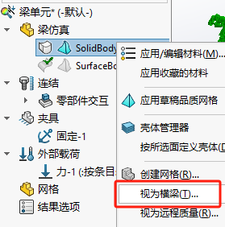 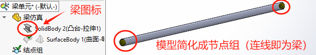
 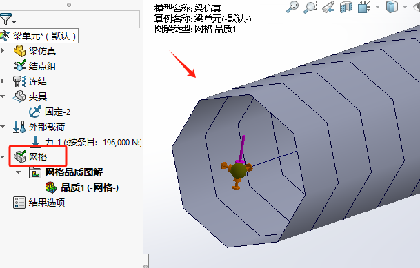
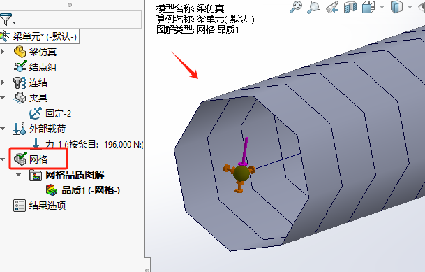
简支梁
实体单元模拟梁单元
需要要借助【远程载荷/质量】来模拟梁单元约束的“节点”
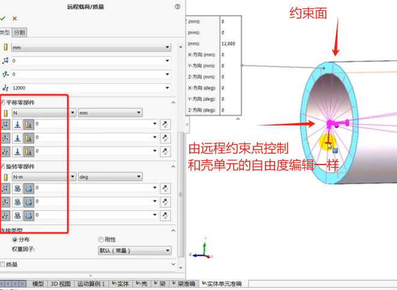分析实例:车架
问题描述:对车架底部铰约束，并在图中指定梁上各自施加竖直向下1000N载荷，考察结构变形及应力情况材料:6063-T6
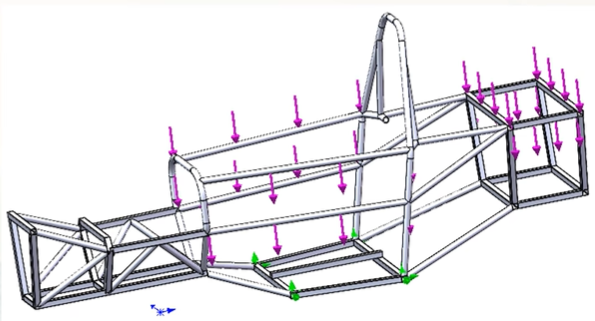【新建算例】
焊接件格式会自动按“梁单元”处理。
如果有短的梁单元可能会提示“不能当作梁单元处理”，这里可以选择忽略。
如果有不能生成梁单元的实体，可能会是微小片体，不具备梁的基本截面形状，这里可以选择删除处理。
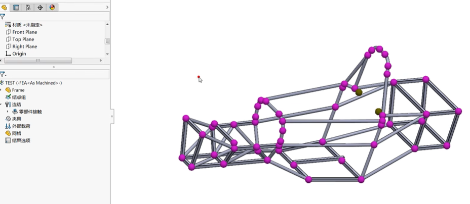梁单元【编辑定义】
需要选择“杆单元”或“梁单元”，多数情况下“横梁”类型的梁单元会用的多些，“绗架”类型的杆单元少些。
在【编辑定义】里，可以定义横梁的方向和两端的连接方式（刚性焊接、滑动、手动自由度）
【连结】零部件接触可以删除，因为前面梁单元【编辑定义】里，已经定义了横梁间的接触情况。
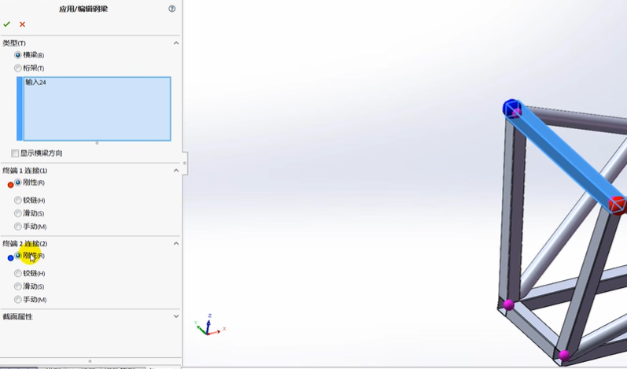【夹具】
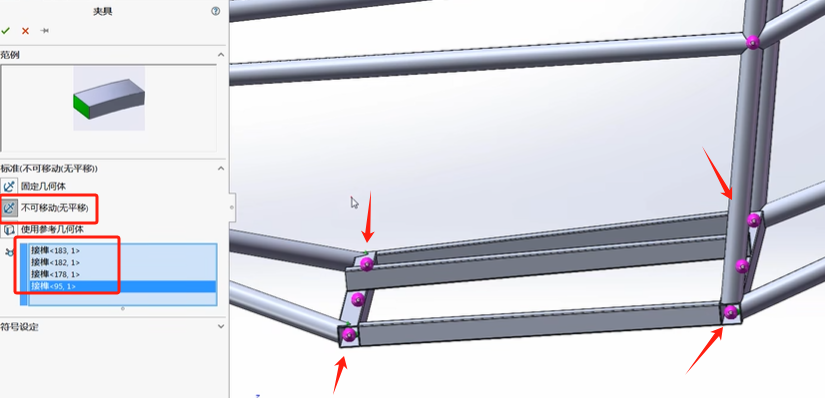【外部载荷】
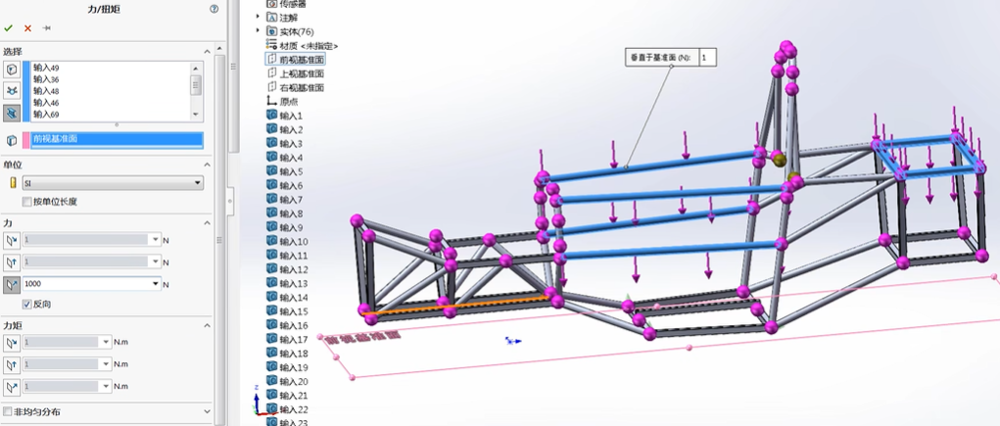【网格】-应用网格控制
方式1：按单个梁单元上有几个单元格控制网格；
方式2：按网格大小在梁单元上控制（建议优先这种方式）
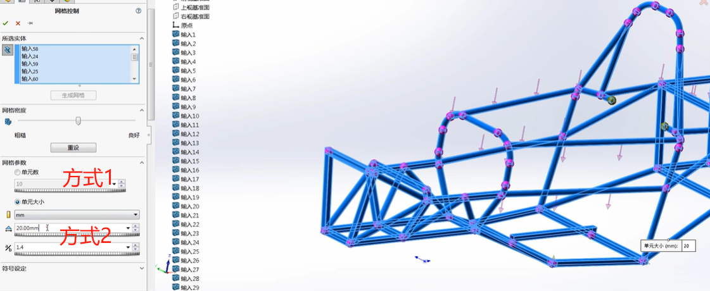【后处理】
【编辑接点】隐藏
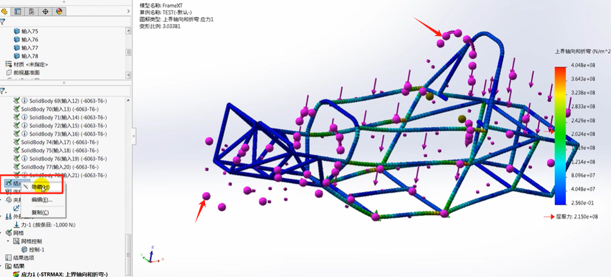 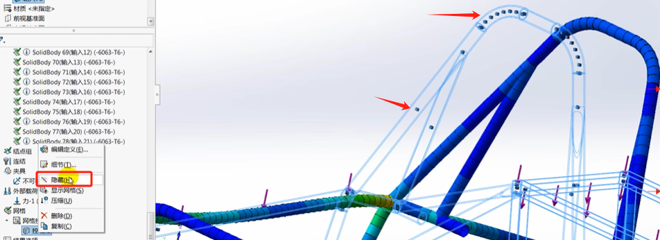应力
梁单元和实体单元有所区别；
位移
绗架和横梁分析
打开模型”Beam frame2.sldpr”。它代表一台起重设备。
材料: 普通碳钢 (E=2.1+e11,Nu=0.28)
夹具: 点”A”和“B”被固定
网格: 实体1为一根缆绳，处理为桁架单元。实体2和3本身就是横梁，处理为横梁单元，扭转常数=27800mm^4最大抗剪应力的距离=11.5mm,抗剪因子=1.
戴荷(所有方向均为-Y):横梁3: 3050N；横梁2: 750N；点C: 270N；重力加速度: 9.81m/s
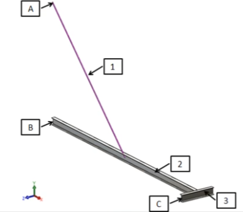Q1：模型上最大的URES位移是多少mm
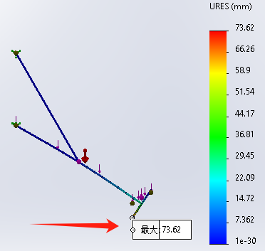Q2：将横梁2的最高轴向和折弯应力多少(单位:MPa，保留两位小数)。
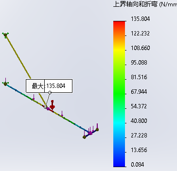135.804
Q3：将桁架1的拉伸应力多少(单位:MPa，保留两位小数)
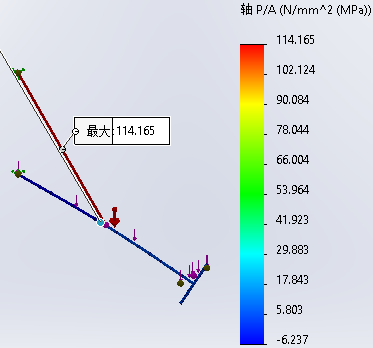114.165Mpa
Q4：横梁2的扭转应力是多大?(填写绝对值，单位MPa，保留两位小数）
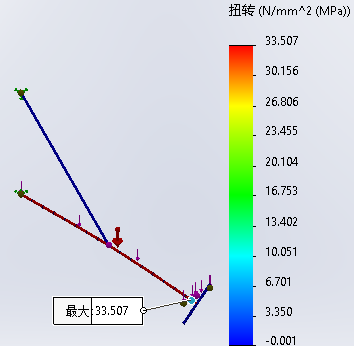33.507
Q5：横梁2的最大弯矩是多少?(填写绝对值，单位N*m，保留两位小数）
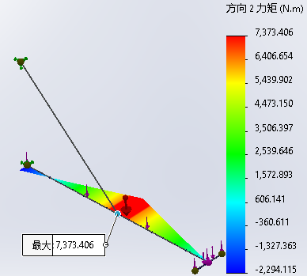7373.406
Q6：B点的合力反力矩是多少?(单位N*m，保留两位小数）
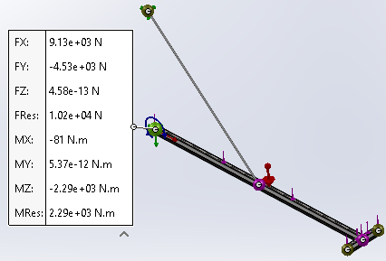2292N*m
Q&A
弯曲梁单元
对于弯曲梁单元，软件会将其处理成多端。
锥形梁单元
力矩方向
横梁图表。一个两端固定的横梁沿本地方向 1 承受均匀分布载荷的示例。软件将绘制方向 1 上的抗剪图解和关于方向 2 的力矩图。但是这里为什么是方向2？
使用相同的分析设置。将横梁2的最高轴向和折弯应力记为X(单位:MPa，保蹈网位小数）将衍架1的拉伸应力记为Y(单位: MPa，保当两位小数)
使用相同的分析设置。横梁2的扭转应为是多大?(填写绝对值。单位MPa。保翼两位小数)
横梁2的最大弯矩是多少?(填写绝对值。单位Nm，保翼两位小数
B点的合力反力矩是多少?(单位Nm，保翼两位小教)